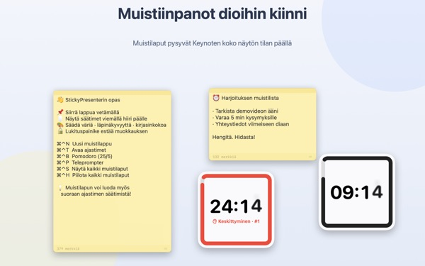
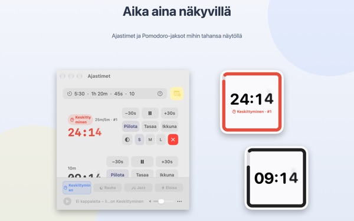
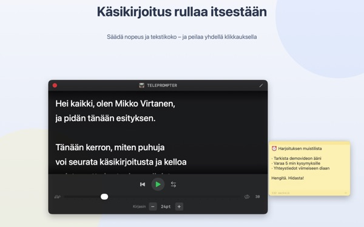
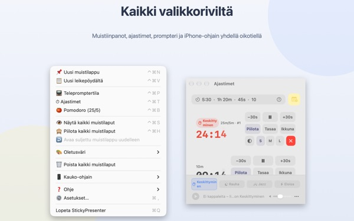

Käsikirjoitus ja jäljellä oleva aika
suoraan dian päällä
Laita Keynote koko näytölle, niin muistilaput ja ajastin pysyvät sen päällä. Ne eivät koskaan vie fokusta esitysapilta, joten esitysohjain vaihtaa dioja tavalliseen tapaan.
Kaikki ominaisuudet ovat ilmaisia. Vaatii macOS 14:n tai uudemman.

Kokeile dian päällä
Kirjoita aika samoin kuin apissa. Napauta 15s, niin näet, miten widget varoittaa ajan käydessä vähiin.
Missä käsikirjoitus ja kello ovat, kun esität?
Esittäjänäkymä vaatii toisen näytön, ja vilkaisun rannekelloon yleisö huomaa aina. Ehkä olet joskus teipannut paperilapun läppäriin ja nähnyt sen putoavan. StickyPresenter kiinnittää käsikirjoituksen ja jäljellä olevan ajan suoraan dian yläpuolelle, sinne mihin katseesi jo osuu.
Yksi vilkaisu kertoo, paljonko aikaa on
Neliön muotoinen widget nurkassa näyttää jäljellä olevan ajan. Se muuttuu punaiseksi lopun lähestyessä, ja kun aika loppuu, kuuluu merkkiääni ja reunus vilkkuu.
Kirjoita ajat miten haluat, esimerkiksi 5:30 tai 1h 20m, tai 25/5, jolloin saat pomodoron, joka vuorottelee keskittymistä ja taukoa. Avaa ajastin omaan ikkunaansa, niin voit jakaa näytönjaossa tai AirPlayllä vain sen.

Lue tekstiä ja katso kameraan
Teleprompter vierittää tekstiä valitsemallasi nopeudella ja pysähtyy itsestään loppuun. Kopioi teksti, paina ⌘⌃P, niin se aukeaa valmiina.
Peilitila sopii puoliläpäisevällä lasilla varustettuihin telepromptereihin, ja nopeus ja fonttikoko säilyvät seuraavaan kertaan.

Diaa ei tarvitse jättää
Appi toimii hiljaa valikkorivillä ilman Dock-symbolia ja ilman ikkunoita, joita pitäisi vahtia. Pikanäppäimet, kuten ⌘⌃N uudelle lapulle ja ⌘⌃T ajastimille, toimivat myös koko näytön Keynotessa.
Lavalla ilmainen iPhone-appi Remote Controller for Sticky käynnistää ja pysäyttää ajastimen ja siirtää widgetin, jos se peittää dian.

Kolme askelta alkuun
- 1
Avaa appi
Valikkoriville ilmestyy lappusymboli, ja ensimmäisellä kerralla aukeaa lyhyt opas.
- 2
Lisää lappu ja ajastin
Kopioi käsikirjoitus ja paina
⌘⌃V, kirjoita sitten esityksen pituus ajastinkenttään. - 3
Siirry koko näytölle
Lappu ja ajastin pysyvät päällimmäisinä.
Pikanäppäimet ja ajan merkintätavat
- ⌘⌃N
- Uusi muistilappu
- ⌘⌃V
- Uusi lappu leikepöydältä
- ⌘⌃T
- Näytä tai kätke ajastimet
- ⌘⌃B
- Aloita pomodoro (25 min keskittymistä, 5 min taukoa)
- ⌘⌃P
- Teleprompter
- ⌘⌃S · ⌘⌃H
- Näytä tai kätke kaikki laput
- 10
- Pelkkä numero tarkoittaa minuutteja (10 min)
- 5:30 · 1:15:00
- Minuutit:sekunnit, tunnit:minuutit:sekunnit
- 1h 20m · 45s
- Yksiköiden kanssa
- 25/5
- Keskittyminen/tauko vuorotellen, kunnes pysäytät
Kaikissa pikanäppäimissä painetaan yhtä aikaa Komentoa (⌘) ja Ctrl:ää (⌃), ja ne toimivat myös toisessa apissa. Ajastimen voi asettaa enintään 99:59:59.
Usein kysyttyä
Onko se todella ilmainen?
On. Kaikki ominaisuudet ovat ilmaisia, ja iPhone-appi Remote Controller for Sticky on erillinen ilmainen appi. Jos appi on sinulle hyödyllinen, voit antaa kehittäjälle juomarahaa asetuksista; se ei avaa mitään lisää.
Voinko näyttää näytönjaossa tai peilauksessa vain ajastimen?
Voit. Ajastimen rivin Ikkuna-painike avaa sen tavallisena ikkunana. Silloin se näkyy näytönjaon ja AirPlayn ikkunaluettelossa, ja voit jakaa pelkästään sen.
Kätkin ajastinwidgetin enkä löydä sitä.
Vie osoitin ajastinikkunassa kyseisen ajastimen rivin päälle, niin widgetin paikka merkitään katkoviivalla. Tasaa-painike tuo sen takaisin ajastinikkunan viereen.
Suljin lapun vahingossa.
Valikkorivin Avaa suljettu muistilappu uudelleen palauttaa minkä tahansa 20 viimeisimmästä. Laput tallentuvat kirjoittaessa ja palaavat samaan kohtaan, kun appi avataan uudelleen.
Pikanäppäin ei toimi.
Jos oppaan pikanäppäintaulukko näyttää sen kohdalla Toisen apin käytössä, toinen appi on varannut sen ensin. Sulje se appi, niin pikanäppäin toimii taas. Käyttöapuoikeutta ei tarvita.
Miksi Kameleontti-teema pyytää näytön tallennusoikeutta?
Kameleontti lukee widgetin takana olevan näytön värin ja mukautuu siihen, ja siihen tarvitaan tämä oikeus. Mitään ei tallenneta eikä lähetetä. Ilman oikeutta teemat Järjestelmä, Vaalea ja Tumma toimivat normaalisti.
Miten lisään taustamusiikkia?
Valitse tunnelma (Keskittyminen, Rauha, Jazz tai Eloisa) ajastinikkunan alareunan musiikkipalkista, niin appi luo jokaiselle kansion. Lisää sinne omia kappaleitasi, niin ne soivat järjestyksessä ajastimen kanssa. Apin mukana ei tule musiikkia.
iPhonen kauko-ohjain ei löydä Maciani.
Tarkista järjestyksessä: onko StickyPresenter käynnissä Macissa (symboli valikkorivillä); ovatko molemmat laitteet samassa Wi‑Fi-verkossa eivätkä vierasverkossa tai mobiilidatalla; onko Paikallisverkko sallittu Tietosuoja ja turvallisuus -asetuksissa sekä iPhonessa että Macissa; onko VPN pois päältä.
Kauko-ohjain sanoo, että parituskoodi on väärä.
Syötä nelinumeroinen koodi, joka näkyy juuri nyt Macin valikkorivin Kauko-ohjain-valikossa. Jos klikkasit Uusi parituskoodi, vain uusi koodi kelpaa. Ensimmäisen parituksen jälkeen yhteys syntyy heti, kun avaat apin.
Voiko joku muu ohjata ajastintani?
Ei ilman koodiasi. Mac hyväksyy vain kauko-ohjaimet, jotka ovat syöttäneet oikean koodin, ja yhteys kulkee salattuna suoraan paikallisverkossa. Jos joku on nähnyt koodin, valitse Kauko-ohjain-valikosta Uusi parituskoodi tai Unohda pariliitetyt kauko-ohjaimet.
Mihin lappuni ja käsikirjoitukseni tallentuvat?
Vain tähän Maciin. Ei tiliä eikä mainoksia, eikä verkkoon lähde mitään muuta kuin nimetöntä käyttötilastoa ja palautetta, jonka itse päätät lähettää.
Kysyttävää, virheitä tai ideoita? Kirjoita osoitteeseen mizzking75@gmail.com.